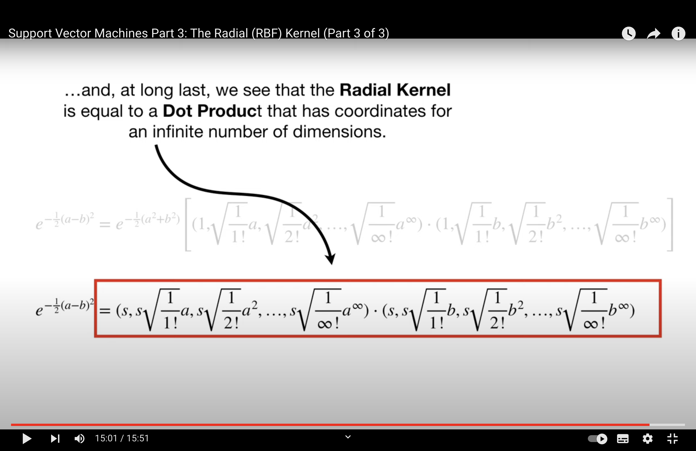

Review 1#
This notes is completed with assistance of ChatGPT
ToC#
Statistical School of Thought
Linear Regression
Logistic Regression
SVM (hard-margin, soft-margin)
SVM#
Feature |
Hard SVM |
Soft SVM |
|---|---|---|
Tolerance to Misclassification |
No false tolerance |
Includes false tolerance |
Data Requirement |
Linearly separable data |
Non-linearly separable data |
Optimization Goal |
\( \min \frac{1}{2} |w|^2 \) |
\( \min \left(\frac{1}{2} |w|^2 + C \sum_{i=1}^{n} \xi_i\right) \) |
Slack Variables (\(\xi\))) |
Not applicable (no violations allowed) |
Used to measure violations (distance to the wrong side of margin) |
Impact of Violations |
Not allowed |
Penalized by the term \( C \sum_{i=1}^{n} \xi_i \) |
Support Vectors |
Points on the margin |
Points on or within the margin (including misclassified points) |
The slack variables \( \xi \)#
The slack variables \( \xi \) in a soft-margin SVM are not typically “calculated” directly in a stand-alone manner. Instead, they emerge as part of the SVM optimization process.
In the context of a soft-margin SVM, the slack variables \( \xi_i \) represent the distance by which an example might violate the margin. The soft-margin SVM optimization is formulated to allow these violations but penalize them according to their magnitude, controlled by the parameter \( C \).
To elaborate:
Given a set of training data \(\{(x_1, y_1), \dots, (x_n, y_n)\}\) where \(x_i \in \mathbb{R}^p\) and \(y_i \in \{-1, 1\}\), the optimization problem for the soft-margin SVM is:
Here’s what the constraints imply:
If a point \( x_i \) is correctly classified and lies outside the margin, then \( \xi_i = 0 \).
If a point \( x_i \) lies inside the margin but is still correctly classified, then \( 0 < \xi_i < 1 \).
If a point \( x_i \) is misclassified, then \( \xi_i \geq 1 \).
In practical terms, when you use an SVM solver (like the popular libsvm or the SVM implementation in scikit-learn), the optimization algorithm internally computes values for the decision boundary \( w \) and bias \( b \) as well as the slack variables \( \xi \). Once the algorithm converges, it provides you with the optimal hyperplane and, implicitly, the associated slack variables.
If you wanted to explicitly calculate the slack variable \( \xi_i \) for a specific data point \( x_i \) after training, you could use the following relation:
This equation gives you the distance by which the example violates the margin. If it’s zero, the example does not violate the margin.
Lagrange multipliers (\(\lambda\) or \(\alpha\))#
The Lagrange multipliers, often represented by \( \alpha \) in the context of SVMs, are central to the Lagrangian dual formulation of the SVM optimization problem. The computation of the Lagrange multipliers is done through quadratic programming solvers in a dual optimization framework.
Here’s a broad overview of the process:
Formulate the Lagrangian: Given the primal optimization problem of the SVM, we introduce the Lagrange multipliers (\( \alpha \)) and form the Lagrangian, which combines the objective function and the constraints. For the SVM, this Lagrangian is:
\[ L(w, b, \alpha) = \frac{1}{2} \|w\|^2 - \sum_{i=1}^n \alpha_i [y_i (w \cdot x_i + b) - 1] \]Where \( \alpha_i \) are the Lagrange multipliers.
Derive the Dual Problem: To get the dual problem, you first find the partial derivatives of \( L \) with respect to \( w \) and \( b \), and then set them to zero. This will give you equations that represent \( w \) in terms of \( \alpha \) and other terms. By substituting these relations into the Lagrangian, you can transform the primal optimization problem into a dual problem which solely involves the \( \alpha \) values.
Solve the Dual Problem: The dual problem resulting from the above process is a quadratic programming problem. It’s a maximization problem with respect to the \( \alpha \)‘s. This problem can be efficiently solved using quadratic programming solvers.
For the SVM, the dual problem is:
\[ \max_\alpha \sum_{i=1}^n \alpha_i - \frac{1}{2} \sum_{i=1}^n \sum_{j=1}^n \alpha_i \alpha_j y_i y_j (x_i \cdot x_j) \]Subject to:
\[ \sum_{i=1}^n \alpha_i y_i = 0 \quad \text{and} \quad 0 \leq \alpha_i \leq C, \quad \forall i \]Identify the Support Vectors: Once the \( \alpha \) values are found, any data point \( x_i \) for which \( \alpha_i > 0 \) is considered a support vector. These are the vectors that lie on or within the margin.
Compute \( w \) and \( b \): Using the calculated \( \alpha \) values and the support vectors, you can compute the weight vector \( w \) and bias \( b \) to describe the optimal hyperplane.
The actual computation of the Lagrange multipliers (\( \alpha \)) involves numerical methods, and there are specialized algorithms and libraries designed for this, like SMO (Sequential Minimal Optimization) and software packages like LIBSVM.
In practical machine learning workflows, you usually don’t compute the Lagrange multipliers by hand; instead, you rely on established SVM libraries to solve the dual problem and provide the support vectors, \( \alpha \) values, and the hyperplane parameters.
Primal and Dual#
When to Use
n >> m: primal
m >> n: dual
where n is the number of data; m is the number of features.
primal = dual Under KKT condition
KKT#
Before diving into the KKT conditions for SVM, let’s recap the primal optimization problem for the SVM:
Primal Problem: Given a set of training data \(\{(x_1, y_1), \dots, (x_n, y_n)\}\) where \(x_i \in \mathbb{R}^p\) and \(y_i \in \{-1, 1\}\), the goal of the SVM is to find a separating hyperplane with maximum margin. The optimization problem is formulated as:
Where:
\( w \) is the weight vector of the hyperplane.
\( b \) is the bias term.
\( \xi_i \) are the slack variables which allow some data points to be on the wrong side of the margin (soft margin).
\( C \) is the penalty for misclassifying a point.
Now, the Lagrangian for this problem is:
Where:
\( \alpha_i \) are the Lagrange multipliers associated with the inequality constraints.
\( r_i \) are the Lagrange multipliers associated with the non-negativity constraints on \( \xi_i \).
The KKT conditions for the SVM optimization problem are:
Stationarity:
Primal feasibility:
Dual feasibility:
Complementary slackness:
The last condition, complementary slackness, has a significant implication: if \( \alpha_i \) is non-zero (i.e., \( x_i \) is a support vector), then \( y_i(w \cdot x_i + b) = 1 - \xi_i \), meaning the data point either lies on the margin or is misclassified. If \( \alpha_i = 0 \), then the data point lies on the correct side of the margin.
These conditions are foundational for the theory of SVM and the Sequential Minimal Optimization (SMO) algorithm, which is commonly used to solve SVM problems.
RBF#
The Radial Basis Function (RBF) kernel, often referred to as the Gaussian kernel, is a popular choice in support vector machine (SVM) and other machine learning algorithms. The RBF kernel function is defined as:
Where:
\( x \) and \( y \) are two data points.
\( \gamma \) (gamma) is a parameter that determines the shape of the decision boundary.
\( \|x - y\|^2 \) is the squared Euclidean distance between the two points.
Let’s understand the behavior of the RBF kernel with respect to the parameter \( \gamma \):
Small \( \gamma \) Value:
The term \( -\gamma \|x - y\|^2 \) becomes very small (close to zero), so the exponential function approaches 1.
The resulting kernel values are high even for data points that are far apart. This means the influence of a single training example reaches far, resulting in a smoother decision boundary.
If \( \gamma \) is too small, the model may become too simplistic and may not capture the complexities in the data. This can lead to underfitting.
Large \( \gamma \) Value:
The term \( -\gamma \|x - y\|^2 \) can become large even if \( x \) and \( y \) are only moderately distant from each other, pushing the exponential term towards 0.
The resulting kernel values decay rapidly and become close to 0 even for moderate distances. Thus, the influence of a single training example is very local.
This means that the model will have a wiggly decision boundary, trying to fit closely to each data point.
If \( \gamma \) is too large, the model may fit too closely to the noise and outliers in the training data, leading to overfitting.
In essence, \( \gamma \) in the RBF kernel acts as an inverse radius of influence of samples selected by the model as support vectors. A smaller value means a larger radius of influence, creating a smoother decision surface, while a larger value indicates a smaller radius of influence, leading to a more intricate decision surface.
When using the RBF kernel in practice, it’s crucial to choose an appropriate value for \( \gamma \) based on cross-validation or other model selection techniques to avoid underfitting or overfitting.
proving a pairwise function is a kernel#
In machine learning, a kernel function is a way to compute the dot product of two vectors in some (possibly infinite-dimensional) feature space. The advantage is that this computation can be done without explicitly visiting the feature space, which can be computationally expensive or even infeasible.
Method 1: Find \( \phi \) Directly
This method involves finding an explicit mapping \( \phi \) from the input space to a feature space such that the kernel can be expressed as \( K(u, v) = \langle \phi(u), \phi(v) \rangle \), where \( \langle \cdot, \cdot \rangle \) denotes the dot product.
This can indeed be hard because for many kernels, the mapping \( \phi \) leads to an infinite-dimensional space.
Method 2: Mercer’s Theorem
Mercer’s theorem provides a criterion for a function to be a kernel without explicitly finding the feature mapping \( \phi \).
Essentially, a function \( K \) is a valid kernel if and only if for any finite set of points \( \{ x_1, x_2, ..., x_n \} \), the Gram matrix \( G \) (whose entries are given by \( G_{ij} = K(x_i, x_j) \)) is symmetric and positive semi-definite.
The popular approach here involves proving that the Gram matrix is positive semi-definite for all possible sets of points. This is a more theoretical approach and requires a foundation in linear algebra.
The product of 2 positive semi definite matrix will result in a positive semi definite matrix.
Method 3: Use Rules
Once you know certain functions are valid kernels, you can combine them using various rules to produce new kernels. This is the easiest method when applicable. Some of these rules include:
Addition: If \( K_1 \) and \( K_2 \) are kernels, then \( K(u, v) = K_1(u, v) + K_2(u, v) \) is also a kernel.
Scalar Multiplication: If \( K_1 \) is a kernel and \( c \) is a positive constant, then \( K(u, v) = c K_1(u, v) \) is a kernel.
Function Multiplication: If \( K_1 \) is a kernel and \( f \) is a real-valued function, then \( K(u, v) = f(u) K_1(u, v) f(v) \) is a kernel.
Understanding Mercer’s theorem and its implications can be a bit challenging without a background in functional analysis and linear algebra. If you’re diving deep into kernel methods, it might be helpful to review these topics to better grasp Mercer’s theorem and its utility.
{kind=link}
Proof of Kernel#
Ah, the Taylor expansion provides another elegant way to demonstrate the validity of the kernel. Let’s use this approach for the second proof:
Given Kernel: \( k'(x, x') = \exp(k(x, x')) \) for a valid kernel \( k \)
We want to prove that \( k' \) is a valid kernel.
First, let’s expand \( e^z \) using its Taylor series expansion:
Using this expansion, we can write the kernel \( k' \) as:
Each term in this infinite sum corresponds to a polynomial kernel (or its higher powers) of the original kernel \( k \). Since the original kernel \( k \) is valid, its polynomial extensions (e.g., \( k(x, x')^2 \), \( k(x, x')^3 \)) are also valid. This is because polynomial combinations of valid kernels are valid.
Now, the infinite sum of valid kernels is also a valid kernel, as long as the sum converges (which it does due to the properties of the exponential function and its Taylor expansion).
Hence, \( k'(x, x') \) is a valid kernel.
This proof leverages the properties of the Taylor series expansion and the validity of polynomial combinations of kernels.
MLE & Logistic#
Alright, let’s break this down step by step.
Logistic Regression Model:#
In logistic regression, we model the probability \( p(y=1 | \mathbf{x}) \) as:
And consequently:
Likelihood:#
The likelihood of the parameters \( \theta \) given a dataset \( D \) is:
Where \( N \) is the number of samples.
Log Likelihood:#
Taking the logarithm of the likelihood gives:
Why Use the Logarithm?#
Computational Stability: Products of probabilities can be extremely small, leading to numerical underflow. Summing logarithms avoids this problem.
Simpler Derivatives: Logarithms turn products into sums, making the differentiation process simpler when computing the gradient.
Objective for Logistic Regression:#
In logistic regression, we typically want to maximize the log likelihood (or equivalently, minimize the negative log likelihood):
Difficulty with Logistic Regression:#
Unlike linear regression, where the objective function is convex and has a closed-form solution (the normal equations), the objective function for logistic regression doesn’t have a closed-form solution. This means:
Iterative Optimization: We need iterative optimization algorithms like gradient descent, Newton-Raphson, etc., to find the values of \( \theta \) that minimize \( J(\theta) \).
Gradient Computation: Each iteration requires the computation of the gradient of \( J(\theta) \) with respect to \( \theta \). This gradient is derived from the log likelihood, which is why the “log MLE trick” is applied.
No Exact Solution: There’s no formula that can directly give you the optimal parameters \( \theta \) like in linear regression. Instead, the parameters are approximated iteratively.
In summary, the “log MLE trick” in logistic regression involves taking the logarithm of the likelihood to simplify the optimization process, both for computational stability and ease of differentiation. The primary challenge with logistic regression is that the optimization process is iterative, requiring multiple steps and gradient computations to converge to a solution.